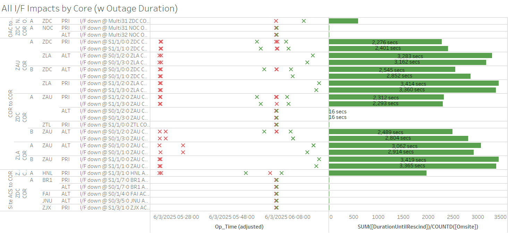

Weekly Highlights 20250528-20250604
5/28-6/4 - MTP WRE Bias Alarms
- 5/28 02:05 - MTP WRE-A and WRE-C alarmed with SE
729 WRE Bias Err for all C&Vs -- ref LIR
989353224
- 5/28 02:32 - MTP WRE-A to Maintenance and Restarted; restored to Normal at 5/28 02:54
- 5/28 02:54 - MTP WRE-C to Maintenance and Restarted; restored to Normal at 5/28 03:27
- 5/31 05:55 - MTP WRE Bias alarm
- 6/2 01:44 - MTP WRE Bias alarm
5/29-6/2 - CM1 GUS Faults (C5 KPA Failure)
- 5/29 11:43 - CM1 GUS Faulted from Backup with SE 193 C5 KPA Failure -- ref LIR 989890424; Control Powered and restored to Backup at 5/29 12:39
- 5/30 08:45 - CM1 GUS Faulted from Backup with SE
193 C5 KPA Failure;
RFU EQ Uplink Fault. Airflow Sensor Fault. RESET.-- ref LIR 990307124; Conrol Powered and restored to Backup at 5/30 09:33 - 6/2 13:48 - CM1 GUS Faulted from Backup with SE
193 C5 KPA Failure;
Site Maint rpts fault due to low air flow, adjusted sensor to clear alarm-- ref LIR 992318724; Control Powered and restored to Backup at 6/2 15:08
5/29-6/3 - ZOA WRE-A Processor Failed
- 5/29 22:49 - ZOA WRE-A went No Data Reported with a Process Failure SE; Control Power did not restore -- ref LIR 990058924...
- 6/3 20:53 - ZOA WRE-A returned to Maintenance
after replacing processor; restored to
Normal at 6/3 21:37
- ZOA WRE-A - 5/29/25-6/3/25 - Processor failed -- ref LIR 990058924
5/30 - ZBW WRE-B Freq Std Failed
- 5/30 17:07 - ZBW WRE-B received SE 30 Minor Alarm
from Freq Std; set to Maintenance and Control
Powered at 5/30 17:20 but inits failed and could
not restore -- ref LIR
990384924; Freq Std alarm code 0x18
"DAC Gain at Maximum" and Allan
Voltage dead;
Frequency Standard ordered. Order# P802292; last Control Power OFF at 5/30 19:30...
5/30-6/1 - ZMP WRE-C Faults (Freq Std)
- 5/30 20:44 - ZMP WRE-C Faulted with SEs 29,52,53,59 indicating Freq Std -- ref LIR 990426824; Mode changed to Maintenance then restored to Normal with no Control Power at 5/30 20:58
- 5/31 17:03 - ZMP WRE-C Faulted with SEs 29,52,53,59 indicating Freq Std -- ref LIR 990812424; Control Powered and restored to Normal at 5/31 17:40; alarm code 0x7 cleared after Control Power
5/31-6/4 - YYR WRE-C Freq Std Alarms
- 5/31 03:20 - YYR WRE-C starts flapping SE 30 Minor Alarm from Freq Std
- 6/2 13:52 - YYR WRE-C to Maintenance and Control Powered to address Freq Std Minor Alarms; Freq Std Minor Alarm did not clear; restored to Normal at 6/2 14:33
- 6/3 08:33 - YYR WRE-C to Maintenance and Control Powered again to address Freq Std Minor Alarms; WRE Faulted from Verification Mode when Freq Std init failed; attempted multiple Control Powers but Freq Std fails each time -- ref LCM 992845024...
- 6/4 16:46 - YYR WRE-C OTS to replace Freq Std --
ref LAD
992329224; restored to Normal
at 6/4 17:32
- YYR WRE-C - 6/3/25-6/4/25 - Freq Std failed -- ref LCM 992845024
5/31 - NOCC O&M Archive Storage 100%
- 5/31 16:29 - NOC O&M Archive Storage at 100% Capacity...
6/2 - MTP WRE-B Onsite Investigation
- 6/2 17:29 - MTP WRE-B returns to Maintenance to investigate issues preventing initialization...
- 6/2 21:28 - MTP WRE-B Control Powered OFF... onsite investigation shows DC Output from PCU is not lighting up...
6/3 - ZAU Comm Event (MR-181401)
- 6/3 05:22 - ZAU Comm Event affecting COR-COR
circuits to ZLA and ZDC for
MR-181401 ZAU<>ZLA N1 A/N2 P, ZDC N1 P/N2 A, HNL N1 Pri. L3Harris to transition PRI CKTS from ONS C15310 to Fujitsu FW4100.-- ref LIR 989358324- L1/L2 Bias Alarms for BIL, YWG, ZAN, and ZOB for ZDC and ZLA C&Vs

6/3 - ZAU WRE-C Running with High RAM Utilization
- 6/3 17:30 - ZAU WRE-C to Maintenance and Control Powered to address high RAM utilization; restored to Normal at 6/3 18:27
Various Comm Impacts
* Only captures major / long-term comm outages
CM1 Comms
- 5/28 15:26 - CM1 Ring 2 PRI comms flapping; last event cleared at 5/28 22:04 (~1073 seconds total)
- 5/29 16:03 - CM1 Ring 2 PRI comms flapping; last events cleared at 5/29 22:38 (~1008 seconds total)
- 5/30 16:32 - CM1 Ring 2 PRI comms flapping; last event cleared at 5/30 21:45 (~437 seconds total)
- 6/2 17:06 - CM1 Ring 2 PRI comms flapping; last event cleared at 6/2 22:23 (~697 seconds total)
- 6/3 15:40 - CM1 Ring 2 PRI comms flapping; last event cleared at 6/3 22:34 (~1952 seconds total)
- 6/4 15:22 - CM1 Ring 2 PRI comms flapping...
BET Comms
- 6/1 02:38 - BET Ring 1 ALT / Ring 2 PRI comms flapping; last events cleared at 6/1 03:38 (~408 seconds total)
- 6/2 00:08 - BET Ring 1 ALT / Ring 2 PRI comms flapping; last events cleared at 6/2 01:58 (~1247 seconds total)
- 6/2 06:17 - BET Ring 1 PRI / Ring 2 ALT comms down hard; both lines cleared at 6/2 06:31 (~785 seconds)
- 6/2 18:17 - BET Ring 1 PRI / Ring 2 ALT comms down hard; line cleared at 6/2 18:22 (~319 seconds)
OTZ Comms
- 5/30 17:30 - OTZ Ring 1 PRI / Ring 2 ALT comms flapping; last events cleared at 5/31 00:47 (~7808 seconds total)
- 6/3 08:41 - OTZ Ring 1 / Ring 2 comms all down hard; all lines cleared at 6/3 08:43 (~129 seconds)
- 6/4 16:11 - OTZ Ring 1 PRI / Ring 2 ALT comms flapping; last event cleared at 6/4 16:26 (~104 seconds total)
- 6/4 17:45 - OTZ Ring 1 PRI / Ring 2 ALT comms down hard; both lines cleared at 6/4 18:00 (~895 seconds)
Other Sites
- 5/28 14:54 - BRW Ring 1 ALT comms down hard; line cleared at 5/28 14:56 (~123 seconds)
- 6/2 06:24 - ZHU Ring 1 PRI / Ring 2 ALT comms down hard; both lines cleared at 6/2 07:49 (~5142 seconds)
- 6/3 12:23 - ZMA Ring 2 ALT comms down hard;
ISR 0603-1210-- ref LIR 992887224; line cleared at 6/4 14:04 (~92497 seconds) - 6/3 16:20 - YYR Ring 2 comms down hard; line cleared at 6/3 18:16 (~6977 seconds)
- 6/4 13:05 - ZDC-ZAU Ring 2 ALT COR-COR comms down hard; line cleared at 6/4 13:56 (~3044 seconds)
- 6/4 16:03 - ZDC-ZAU Ring 2 ALT COR-COR comms down hard; line cleared at 6/4 16:17 (~880 seconds)
Mexico Ring 2 Down Hard...
- Targeting network upgrade in CY26
YFB Ring 2 Down Hard...
YFB requires satcom upgrades by NavCanada to restore... ref LIR 892056924
- 11/6/24 18:48 - YFB Ring 2 down hard... both rings to YFB down hard...
List of current offline WREs
List of current offline WREs -- ref WAAS Status Monitor
All Depot shipments to Mexico are halted until the customs process can be finalized
- ZBW WRE-B - 5/30/25-... - Freq Std failed -- ref LIR 990384924
- MMD WRE-A - 3/31/25-... - Freq Std failed -- ref LIR 953873324
- MTP WRE-B - 11/18/24-... - Receiver inits failing -- ref LIR 898330924
- MMX WRE-A - 10/13/24-... - Freq Std failed -- ref LAD 879853824
- MMX WRE-C - 5/15/24-... - Processor failed and could not be restored -- ref LIR 798352224
- MPR WRE-B - 5/3/24-... - Inits failing -- looks like a bad freq std; due to shipping issues, there is no spare Freq Std and no ETA to recover WRE-B... -- ref LIR 44170821
5/11/23-... - MX Ring 2 Satcom Upgrade
- 5/11/23 17:01 - MX Ring 2 SatCom upgrade begins; MX Ring 2 OFFLINE until upgrade troubleshooting is complete
All sites are currently connected through Tijuana with new cables; but still large UDP data packets (WAAS Multicast) being dropped on Ring 2 -- no further actions to take at Tijuana
- All MX Ring 2 currently down with no ETA...
-
WAAS Second Level assessing situation before further troubleshooting...

Major Events


Core I/F Status

Comm Events

Mexico Comm Status


Weekly Highlights 20250521-20250528
5/22-5/28 - WRE Bias and L1/L2 Bias Alarms
- 5/22 02:30 - MTP WRE Bias alarm
- 5/22 15:45 - MPR L1/L2 Bias alarm
- 5/23 02:06 - MTP WRE Bias alarm
- 5/23 14:02 - MPR + MSD L1/L2 Bias alarms; MSD alarms occurred for each C&V with a few min between each alarm with the last one occurring at 5/23 14:07
- 5/23 22:15 - MTP WREs A and C to Maintenance and Restarted to clear WRE Bias Trip; restored to Normal at 5/23 22:34
- 5/28 02:05 - MTP WRE-A and WRE-C alarmed with SE
729 WRE Bias Err for all C&Vs -- ref LIR
989353224
- 5/28 02:32 - MTP WRE-A to Maintenance and Restarted; restored to Normal at 5/28 02:54
- 5/28 02:54 - MTP WRE-C to Maintenance and Restarted; restored to Normal at 5/28 03:27
5/23 - MX Ring 1 Ethernet Transition
- 5/23 12:24 - W7.403L Build downloaded to ZTL COR-A Router to finalize MX Ethernet Transition...
- 5/23 13:54 - Reset ZTL COR-A Router to upgrade; restored at 5/23 14:09 and all MX Ring 1 comms successfully transitioned to Ethernet
5/24 - BIL PCU-C Alarm Condition 0
- 5/24 04:06 - BIL PCU-C received SE 3 Alarm condition 0 detected...
No other significant events and every LRU status remained green. Copied error logs.
5/25 - MMD Subframe Reasonability
- 5/25 11:26 - MMD received SE 728 Subframe Reasonability and PID WRS Down for ZDC/ZLA C&Vs
Various Comm Impacts
* Only captures major / long-term comm outages
CM1 Comms
- 5/21 17:26 - CM1 Ring 2 PRI comms flapping; last event cleared at 5/21 22:28 (~885 seconds total)
- 5/22 17:49 - CM1 Ring 2 PRI comms flapping; last event cleared at 5/22 22:41 (~229 seconds total)
- 5/23 18:07 - CM1 Ring 2 PRI comms flapping; last event cleared at 5/23 20:27 (~200 seconds total)
- 5/27 15:59 - CM1 Ring 2 PRI comms flapping; last event cleared at 5/27 22:53 (~940 seconds total)
- 5/28 15:26 - CM1 Ring 2 PRI comms flapping...
Other Sites
- 5/20 14:10 - YQX Ring 1 PRI comms down hard; line cleared at 5/21 20:37 (~109583 seconds)
- 5/21 20:07 - ZDV Ring 2 ALT / Ring 1 PRI comms flapping; last events cleared by 5/22 12:18 (~3114 seconds total)
- 5/27 17:06 - BET Ring 1 PRI / Ring 2 ALT comms down hard; both lines cleared at 5/27 17:59 (~3164 seconds)
- 5/28 14:54 - BRW Ring 1 ALT comms down hard; line cleared at 5/28 14:56 (~123 seconds)
Mexico Ring 2 Down Hard...
- Targeting network upgrade in CY26
YFB Ring 2 Down Hard...
YFB requires satcom upgrades by NavCanada to restore... ref LIR 892056924
- 11/6/24 18:48 - YFB Ring 2 down hard... both rings to YFB down hard...
List of current offline WREs
List of current offline WREs -- ref WAAS Status Monitor
All Depot shipments to Mexico are halted until the customs process can be finalized
- MMD WRE-A - 3/31/25-... - Freq Std failed -- ref LIR 953873324
- MTP WRE-B - 11/18/24-... - Receiver inits failing -- ref LIR 898330924
- MMX WRE-A - 10/13/24-... - Freq Std failed -- ref LAD 879853824
- MMX WRE-C - 5/15/24-... - Processor failed and could not be restored -- ref LIR 798352224
- MPR WRE-B - 5/3/24-... - Inits failing -- looks like a bad freq std; due to shipping issues, there is no spare Freq Std and no ETA to recover WRE-B... -- ref LIR 44170821
5/11/23-... - MX Ring 2 Satcom Upgrade
- 5/11/23 17:01 - MX Ring 2 SatCom upgrade begins; MX Ring 2 OFFLINE until upgrade troubleshooting is complete
All sites are currently connected through Tijuana with new cables; but still large UDP data packets (WAAS Multicast) being dropped on Ring 2 -- no further actions to take at Tijuana
- All MX Ring 2 currently down with no ETA...
-
WAAS Second Level assessing situation before further troubleshooting...

Major Events


Core I/F Status

Comm Events

Mexico Comm Status